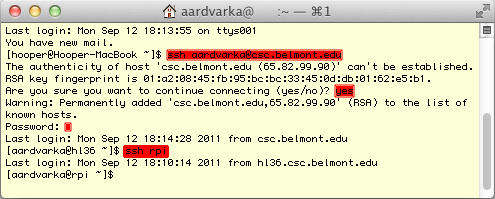
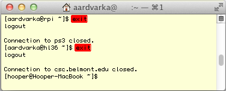

Connecting to the
with Terminal
- You will find the Terminal application in the Utilities folder on your
Mac, or you can type terminal in the Spotlight search box. Terminal
will launch and present a window like the one below. In the figure, commands
you type are highlighted in red.
- Logging in:
- The ssh program is also installed with your Mac, and is accessible
from the command line. Enter the command ssh username@csc.belmont.edu
at the local prompt to connect your machine to the CSC Server. The first
time you connect, you will be prompted with the server's public key.
Answer yes to store the key and continue your session. You will then
be prompted for the password; notice that the password characters
are not echoed on the screen. When you login correctly, you
will see a last login message and a prompt "[username@hl36
~]$ " as shown in the figure.

- At this point, you are logged into the CSC Server, hl36,
but you have not yet reached the
. Enter the command: "ssh
ps3"
to complete your login. You prompt should change to "[username@ps3
~]$ " as shown in the figure.
- Logging out:
- You are logged into three machines, so you have to log out of two of
them, in reverse order, to get back to your local machine. To log out
of the
, enter the exit command
at the ps3 prompt. Unlike the picture below, the screen
actually clears before you see the Connection ... closed.
message and the hl36 prompt.

- Enter exit at the hl36 prompt. You will
be back at the local prompt.
- You may leave Terminal running, and begin at step 2.1 the next time
you need to connect to the .
Or, you may quit Terminal,
in which case you'll have to start at step 1 to reconnect.
- In summary:
- It is important to notice the three distinct prompts in the
Terminal window. Befor you connnect to another machine, the prompt
[localname@local-machine ~]$
reflects the User Name and machine name you chose for your own Macintosh.
The prompt changes to
[username@hl36 ~]$ when you
connect to the CSC server, and again to
[username@
~]$ when you connect to the
. Make it a habit to
know, at all times, who you are and where you are logged in!